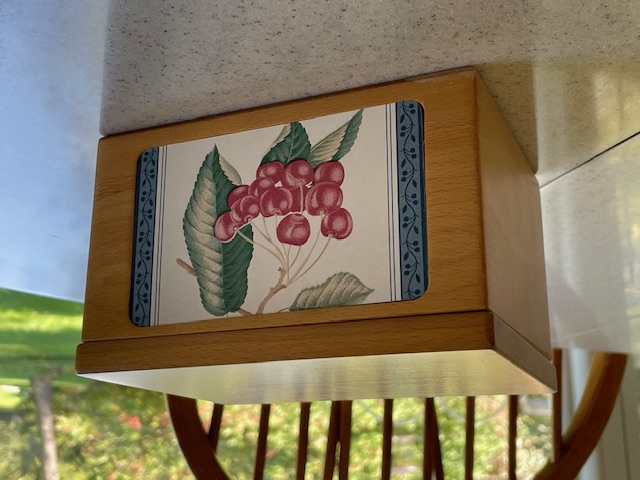

The Recipe Box
Chicken for All Seasons
I prepare this when I need something easy and tasty for my family.
- one tray of chicken legs, about 4-6 pounds
- Morton's Season-All
- Place chicken legs in a single layer on a shallow baking pan lined with aluminum foil and sprinkle with Season-All to taste.
- Bake in a 350-degree oven for one hour.
For less fat you can remove the skin of the chicken legs first before placing them on the baking pan. Yields 6-8 servings.